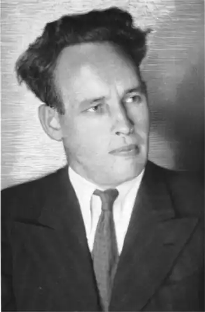
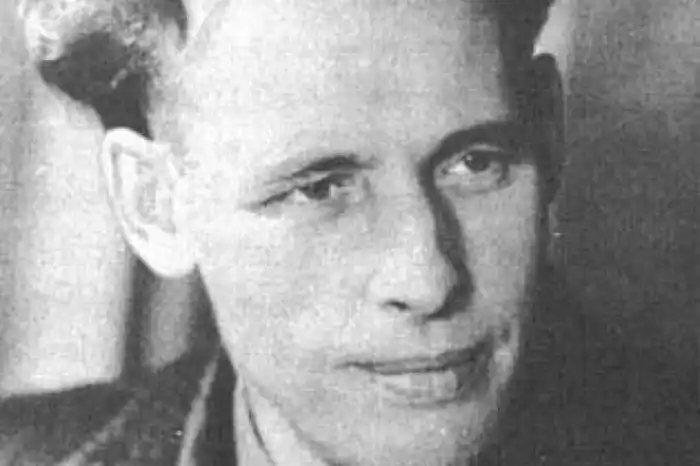
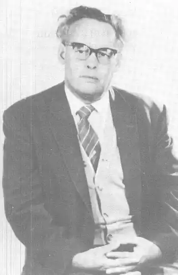

(2 жовтня 1907 — 25 серпня 1963)
ІВАН БАГРЯНИЙ — ПОЛІТИЧНИЙ ДІЯЧ І ПИСЬМЕННИК
Іван Багряний вписав своє ім'я в історію як найвидатніший політичний речник першої еміграції з Радянського Союзу. "Стара" еміграція вийшла за кордон порядком оборонної війни з окупантом, вона не жила під окупантом, її руки і ризи були чисті від будь-яких підкорень, компромісів. Коли останні ар'єргарди Української Армії відходили за Збруч, покоління Багряного було у віці 12-15 років. Зокрема і дванадцятилітній Іван Багряний, син охтинського муляра Павла Лозов'яги, на власні очі бачив заграви українсько-російської війни, терор московських більшовиків. Бачив, як північні наїзники вбили дядька, вояка Української Армії під командою Симона Петлюри, і тут же поруч повалили на смерть його коханого діда-пасічника. Але країна не могла емігрувати. Вона вирвала у ворога компроміс нової економічної і національної політики, юридичне визнання її самостійности (конституція СРСР) і була далі у відродженні. Відродження, як і весну, не можна скасувати. Тому неминуче Україна почала перемагати в нерівному радянському компромісі з Москвою. У це змагання втягалось і підростаюче покоління Багряного, поспішаючи добути освіту і позицію на великому фронті. Строки історії були невмолимо короткі — встигла чи не встигла нація стати на ноги; встиг чи не встиг юнак закінчити вищу освіту; мусів чи не мусів пройти крізь масові примусові організації профспілок, комсомолу, партії; встиг чи не встиг знайти себе і своє життьове покликання — а вже над головою шумить нова гроза тотального вражого терору. Зламавши компроміс і договір (яким була конституція), Москва нищила безоружну країну кулею, депортацією, тюрмою і організованим голодом. Стався геноцид — замах на Відродження, на всю націю. Іван Багряний мав 25 років, коли геноцид на Україні розгорнувся на весь свій диявольський масштаб. Багряний разом із сотнями тисяч поїхав у концтабори Далекого Сходу з вироком на п'ять років. Що встиг він зробити? Технічна і загальна освіта. Перша збірка поезій "До меж заказних" (1927), поема "Аве Марія", роман "Скелька" дали йому дорогу до членства в опозиційній добірній групі письменників МАРС (Підмогильний, Антоненко-Давидович, Плужник, Осьмачка, Косинка, Галич). Але він тільки-но встиг переступити поріг суворої школи літератури, як НКВД перетворило його на "зека" — в'язня далекосхіднього концтабору. Втеча, бездомність, мандри і поворот до своєї країни, що ще не одійшла від геноциду, а вже була напередодні нової катастрофи. Новий арешт, тортури — все це описане в романі "Сад Гетсиманський", що його вважають значною мірою автобіографічним. Друга світова війна дала "вихід" на Захід крізь вогняні ворота фронту, крізь цвинтарні табори полонених і концтабори, крізь унтерменшівську категорію "остарбайтера", крізь оунівське підпілля. Волею і неволею мільйони українців з УРСР опинилися на Заході. Кількасот тисяч їх остались емігрантами. Не еміграція, а "ісход", не група однодумців, а неймовірна мішанина маси — колишніх в'язнів і колишніх сексотів; партійних і безпартійних; рядових червоноармійців і полковників та генералів; неписьменних і письменників; колишніх політичних і колишніх кримінальних злочинців; свідомих патріотів і русифікованих; таких, що були патріотами Радянської України, будували в ній українське відродження, і таких, що були внутрішніми емігрантами; селяни, робітники, фахівці. Коротко — це вийшов конгльомерат отієї соціяльної каші, на яку перетворив комуніст-окупант суспільство України. З цієї каші не міг нормально формуватися струмінь політичної еміграції, бо Німеччина стала для втікачів не країною політичного азилю, а країною концтабору. На еміграції теж не було свободи. Не менш, ніж заборонами, перешкоджала гітлерівська Німеччина формуванню політичної еміграції усілякими "розенбергівськими штабами", в яких псувалися і компромітувалися навіть і дуже пристойні люди. Наскільки не помиляюся, Багряний пішов на Захід і в еміграцію через оунівське підпілля. І от серед такого хаосу і тьми кромішньої залунав голос Івана Багряного. Спершу це був голос письменника, голос "Тигроловів". "Тигролови" зробили велике діло. Вони здерли з радянського раба шкуру зека, оста, "советського человека" і показали під нею незломлену, горду людину, повну життєвої снаги, волі до життя і боротьби. Для старої еміграції образ Григорія Многогрішного, що подолав і тигрів, і НКВД і вирвався у вільний світ, здався таким зухвалим і перебільшеним, що Мосендз і Клен вирішили спародіювати Багряного-Многогрішного в вигаданому ними гумористичному Горотаку. Одначе Горотакові не вдалося подолати Багряного так, як Стрісі — Семенка. Многогрішний переміг, і Горотак вийшов лише симпатичним, буквально дружнім шаржем. Горотак тільки збільшив популярність Багряного-Многогрішного. Кажуть, Багряний належав якийсь час до ОУН. Степан Бандера нібито відпустив Багряного на власну волю творити власну партію з емігрантів із УРСР, визнаючи нібито, що ОУН політично не впорається з цим завданням. Якщо це було так, то було слушно. Ні в які-бо готові форми не міг уміститися чвертьсторічний досвід України в складі СРСР з двома світовими війнами й двома тоталітаризмами як рамками і як тлом. Ні форми ОУН, ні форми українського соціялізму чи ундизму не могли вмістити й оформити того, нового, ще не визнаного в історії політичного досвіду України. Тут мусіли сказати своє слово ті, в кого той досвід був вписаний і на сердці, і на шкурі. Багряний, щедро обдарований імпульсом чи інстинктом ініціятиви, першим сказав це слово, якщо не вважати статті Аркадія Любченка "Україна живе!", написаної зразу після втечі з України більшовицького окупанта 1942 року. Памфлет-брошура Івана Багряного "Чому я не хочу повертатися до СРСР?" — це ніби перша політична деклярація прав і гідності людини і нації з-під московсько-більшовицького тиску. Вона вийшла в розпалі примусової репатріяції колишніх радянських громадян, яка супроводжувалась і тихими, і голосними трагедіями насильства, тортур, знищення. Колишні зеки, ости, полонені ховалися під іменами чужих націй і людей, не сміли признатись, хто вони і звідки. Брошура Багряного сказала все за них. Сказала кількома мовами, будучи перекладена також на англійську, еспанську, італійську мови. Кожний остівець читав її, і пригортав до грудей, і показував чужинцям як посвідку своєї особистости. Багряний повернув людині її політичну пам'ять. Він почав з того, як у нього на очах московські більшовики вбили його дядька і діда і як було розстріляно відродження його народу та вчинено геноцид. Комунізм — найновіша фаза російського імперіялізму і засіб знищення підвладних йому націй — в тому числі української. Супроти цієї сили виникає явище емігрантів з УРСР і їх рішучість до політичної боротьби. За деклярацією пішло діло: організація газети і видавництва "Українські вісті" і УРДП. Українець із УРСР має багато плюсів, але одного йому бракує: школи політичної самоорганізації і самодіяльности. І то зовсім не через банк вроджених якостей, а тому, що підросійська Україна взагалі ніколи не мала і п'яти років елементарної свободи для практичної громадсько-політичної ініціятиви і самоорганізації. Анахронічні догматичні спори про соціялізм, а також вплив моди віку творити партію за принципом провідництва та ідеології, а не практично-політичним, перешкодили належному зосередженню наявних сил навколо видавництва і УРДП. Вони також стали на заваді того, щоб цей осередок став школою політичної самоосвіти, з одного боку, а з другого — оперативною базою для виконання найдоконечніших практичних завдань, що їх поклала на еміграцію поневолена батьківщина. Все ж нехай і в ослабленому, супроти першого засягу, вигляді, але Багряний таки зумів 17 років, до самої смерти, провадити незалежне видавництво і партію, а при тому ще й зробити вклад у заснування і діяльність УНРади. Багряний був єдиний із політичних лідерів еміграції, що зумів найти групу російських політичних діячів, які пішли на співпрацю з українцями на базі безумовного визнання державної самостійности України. Це Алексінський — знана постать у політичній історії Росії нашого століття. Алексінський вже і переклав на французьку мову роман Багряного "Сад Гетсиманський" та видавав у видавництві "Українські вісті" свій орган "Освобождение". Безумовно, партія і політика забирали у Багряного, мабуть, основну енергію і час, а головне — забирали його здоров'я, бо творили йому численних ворогів, які не давали спати новому противникові. Безумовно, Москва не пошкодувала грошей на агентуру, щоб цькувати Багряного, шкодити йому на полі української еміграції, вносити розвал і в саму УРДП, ба навіть і на власну родину тиснути. Але з другого боку організований Багряним гурт ентузіястів УРДП допоміг йому видавати й поширювати його твори, а зокрема забезпечити дуже трудну справу видання його "Тигроловів" і "Саду Гетсиманського" чужими мовами. Ця симбіоза письменника з його партією не була випадкова. У своїх поезіях (книжка "Золотий Бумеранг", 1946), драмах ("Генерал" — 1948, "Морітурі" — 1948, "Розгром" — 1948), а також у повістях "Тигролови" (1944), "Сад Гетсиманський" (1950), "Огненне коло" (1953), "Маруся Богуславка" (1957), як і в своїх публіцистичних памфлетах, Іван Багряний стверджував одну дуже дорогу для емігранта з УРСР істину. А саме: всупереч замахам на геноцид — людина жива, Україна жива! Ніякого вакууму під диктаторським режимом, лише стиснена до неймовірности, але тим сильніша жива енергія, жива душа — жива нація. Уявляю, яка дорога була кожному не тільки уердепівцю оця велика реабілітація людини, нищеної під наклеюваними їй ярликами "ворога народу", зека, оста, бандита тощо. За це будуть вдячні письменникові мільйони й по той бік заслони. Це підкреслив і чужинецький критик Юзеф Лободовський у статті про "Сад Гетсиманський": "Парадоксально, ця книжка, де діються справді несамовиті речі і безперервно поневіряється людська гідність, є по суті одним безперервним хоралом на честь людини і її духових вартостей. Багряний описує таку страшну дійсність, про яку Кестлерові навіть і не снилося. А все ж таки "Тьма опівдні" є книжкою понурою і гнітючою.